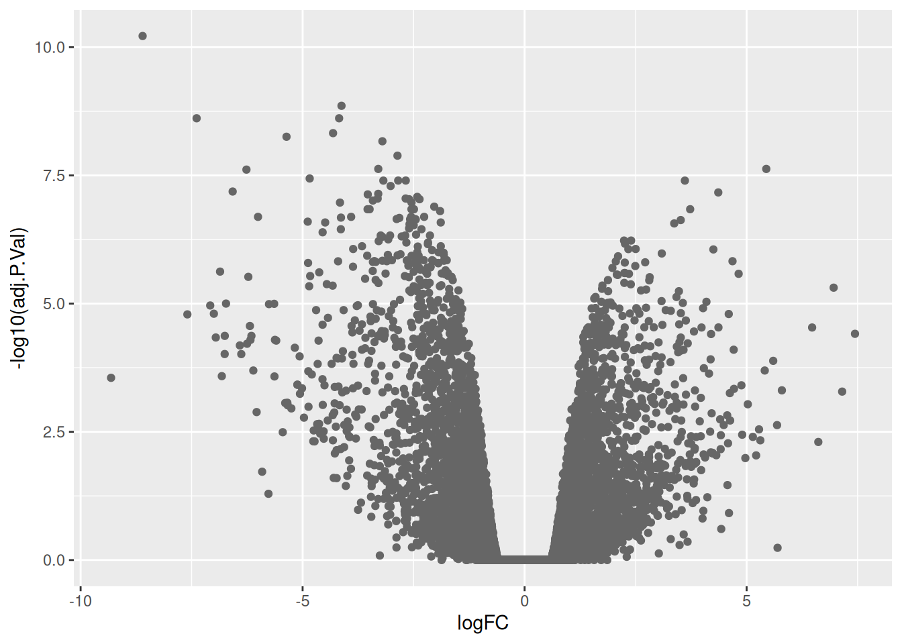
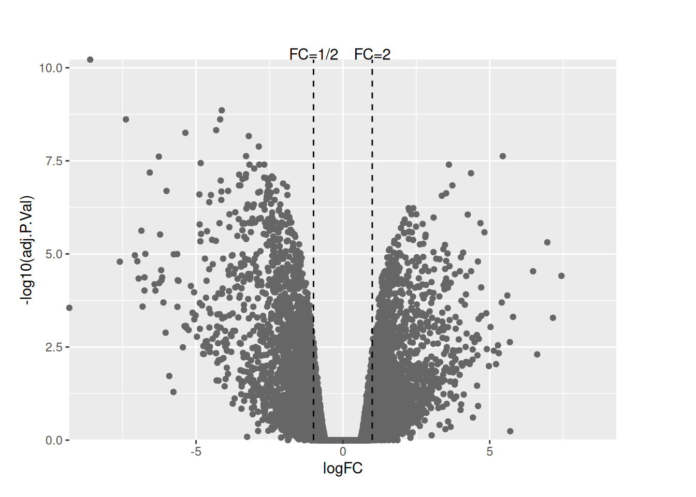
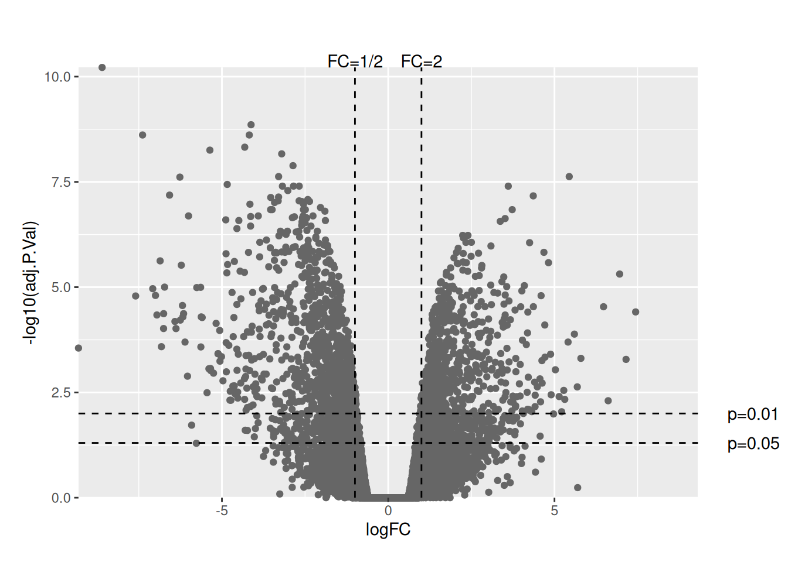
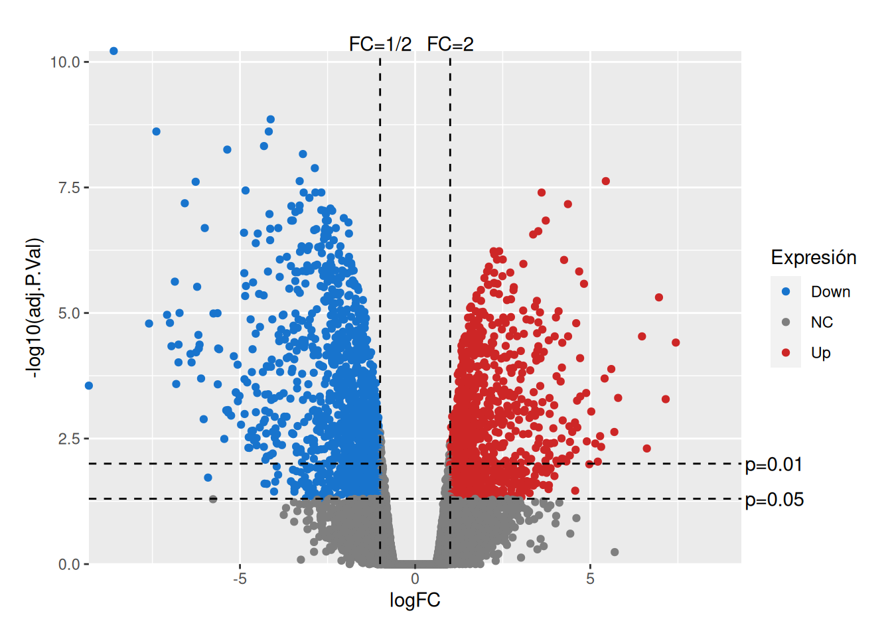
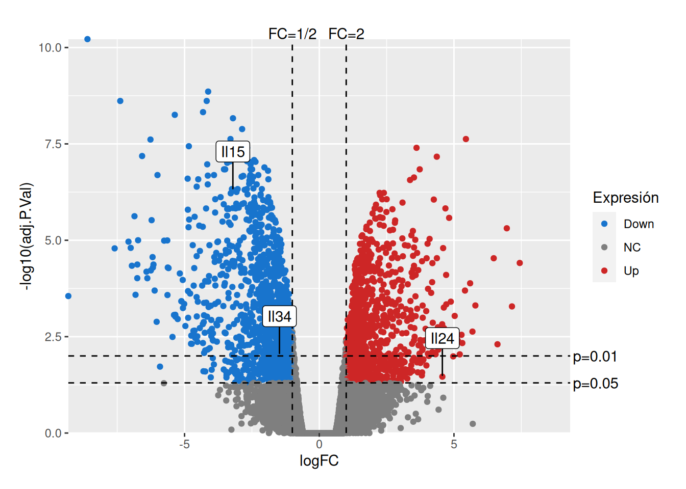

Un diagrama de volcán es una representación gráfica utilizada en Bioinformática para visualizar los resultados del análisis de expresión génica diferencial u otros tipos de análisis de datos ómicos de alto rendimiento, como Proteómica o Metabolómica.
En un diagrama de volcán, cada punto de datos representa un gen (o una proteína/metabolito) del conjunto de datos. El eje x muestra el cambio logarítmico o tamaño del efecto, que mide la magnitud del cambio en la expresión entre dos condiciones (por ejemplo, tratamiento vs. control). El eje y muestra la significación estadística, a menudo representada como el logaritmo negativo del valor p. Un valor p más pequeño indica una mayor significación estadística.
A menudo, los puntos en el gráfico de volcán están coloreados o resaltados según su significación estadística y cambio en la expresión. Por lo general, los genes significativamente sobreexpresados se representan en rojo, los genes significativamente subexpresados en azul y los genes no significativamente expresados en gris o negro. Cuanto más significativos sean estadísticamente y mayor sea el cambio en la expresión, más alejados estarán los puntos del centro del gráfico.
El nombre del del diagrama proviene de su forma característica, donde los genes significativos con grandes cambios en la expresión se representan como puntos alejados del centro, asemejándose a las laderas de un volcán. Mientras tanto, los genes no significativos se agrupan cerca del centro, formando la caldera del volcán.
Los investigadores utilizan gráficos de volcán para identificar rápidamente genes o proteínas con cambios sustanciales en la expresión entre condiciones y, al mismo tiempo, considerar su significación estadística. Esta visualización ayuda a identificar posibles biomarcadores, genes diferencialmente expresados o vías biológicas relevantes asociadas con condiciones o tratamientos específicos.
En esta sección veremos con construir un diagrama de volcán con R.
Datos
Utilizaremos los datos del estudio Fu et al. Nat Cell Biol. 2015, que contienen los resultados del análisis de expresión génica diferencial (logaritmo en base 2 de la razón de cambio y p-valor) de un estudio para comparar dos grupos experimentales.
# Carga de datosdf <-read_csv("datos/datos-volcan.csv")head(df)
# Creación del diagrama de volcánvplot <- df %>%ggplot(aes(x = logFC, y =-log10(adj.P.Val))) +geom_point(color ="grey40")vplot

Para diferenciar los genes con mayor expresión diferencial, es decir, con mayor razón de cambio, se suelen añadir dos rectas verticales. La recta más a la izquierda representa el logaritmo en base 2 de la máxima razón de cambio para considerar un gen subexpresado (suele tomarse una razón de cambio 1/2, es decir, el gen en el grupo experimental se expresa la mitad que en el grupo control), mientras que la recta de la derecha representa el logaritmo en base 2 de la mínima razón de cambio para considerar un gen sobreexpresado (suele tomarse una razón de cambio 2, es decir, el gen en el grupo experimental se expresa el doble que en el grupo control).
# Determinamos las coordenadas mínimas y máximas para las escalas de los ejes.rangex <-max(-min(df$logFC), max(df$logFC))maxy <-max(-log10(df$adj.P.Val))# Dibujo de líneas verticales para el tamaño del efectovplot <- vplot +geom_vline(xintercept =c(log2(0.5), log2(2)),linetype ="dashed") +# Etiquetamos las líneas de la razón de cambio.annotate("text", x =log2(0.5), y = maxy, label ="FC=1/2", vjust =0) +annotate("text", x =log2(2), y = maxy, label ="FC=2", vjust =0) +theme(plot.margin =unit(c(3, 4, 1, 1), "lines")) +coord_cartesian(xlim =c(-rangex, rangex), ylim =c(0, maxy), expand =FALSE, clip ="off") vplot

Del mismo modo, se suelen dibujar líneas verticales para identificar los genes con una expresión diferencial estadísticamente significativa (p-valor menor que 0.05 o 0.01).
vplot <- vplot +geom_hline(yintercept =c(-log10(0.05), -log10(0.01)), linetype ="dashed") +# Etiquetamos las líneas de los p-valoresannotate("text", x =10.2, y =-log10(0.05), label ="p=0.05", hjust =0) +annotate("text", x =10.2, y =-log10(0.01), label ="p=0.01", hjust =0) vplot

Para destacar los genes con mayor expresión diferencial y mayor significación estadística, es habitual dibujarlos con un color diferenciado (típicamente azul para los subexpresados y rojo para los sobre expresados). Para ello, previamente hay que crear una nueva columna en el conjunto de datos con las categorías categorías de expresión(normalmente “Down” para los genes subexpresados significativamente, “NS” para los genes que no cambian y “Up” para los genes sobreexpresados significativamente)
# Crear nueva columna con categorías de expresión génica.df <- df |>mutate(Expresión =case_when( logFC >=log2(2) & adj.P.Val <=0.05~"Up", logFC <=log2(0.5) & adj.P.Val <=0.05~"Down",TRUE~"NC"))# Mostrar tabla con frecuencias de genes subexpresados y sobreexpresadosdf |>count(Expresión) |>gt()
Expresión
n
Down
1245
NC
13578
Up
981
# Definimos los colores para los genes subexpresados, normales y sobreexpresados.colores <-c("dodgerblue3", "gray50", "firebrick3")vplot <- df %>%ggplot(aes(x = logFC, y =-log10(adj.P.Val))) +geom_point(aes(color = Expresión)) +scale_color_manual(values = colores) +# Añadimos las líneas de la razón de cambio.geom_vline(xintercept =c(log2(0.5), log2(2)),linetype ="dashed") +# Etiquetamos las líneas de la razón de cambio.annotate("text", x =log2(0.5), y = maxy, label ="FC=1/2", vjust =0) +annotate("text", x =log2(2), y = maxy, label ="FC=2", vjust =0) +# Añadimos las líneas de los p-valores.geom_hline(yintercept =c(-log10(0.05), -log10(0.01)), linetype ="dashed") +# Etiquetamos las líneas de los p-valores.annotate("text", x = rangex+0.1, y =-log10(0.05), label ="p=0.05", hjust =0) +annotate("text", x = rangex+0.1, y =-log10(0.01), label ="p=0.01", hjust =0) +theme(plot.margin =unit(c(2, 1, 1, 1), "lines")) +coord_cartesian(xlim =c(-rangex, rangex), ylim =c(0, maxy), expand =FALSE, clip ="off")vplot

También se pueden destacar algunos genes de interés en el gráfico mediante etiquetas.
# Creamos un nuevo conjunto de datos con los genes a destacardf_sig <- df |>filter(SYMBOL %in%c("Il15", "Il34", "Il24"))# df_pvalor <- data.frame(x)vplot <- vplot +# Etiquetamos los genes a destacargeom_label_repel(data = df_sig, aes(label = SYMBOL), force =2, nudge_y =1) vplot

Finalmente, añadimos un título al diagrama.
vplot +labs(title ="Diagrama de volcán") +theme(plot.title =element_text(margin=margin(0,0,25,0)))